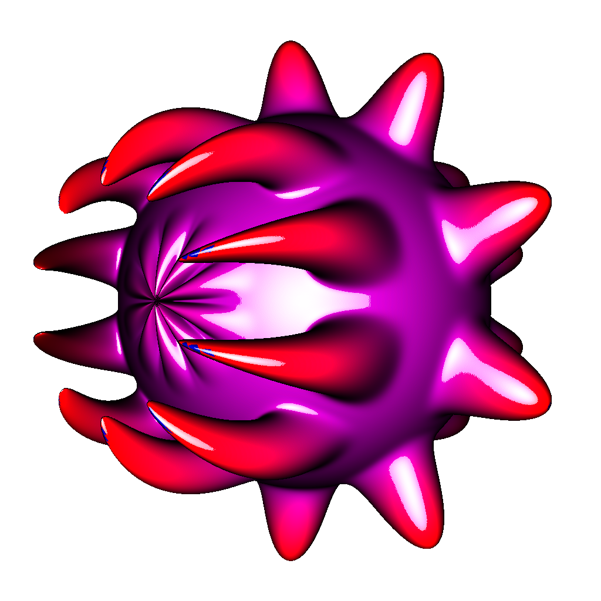
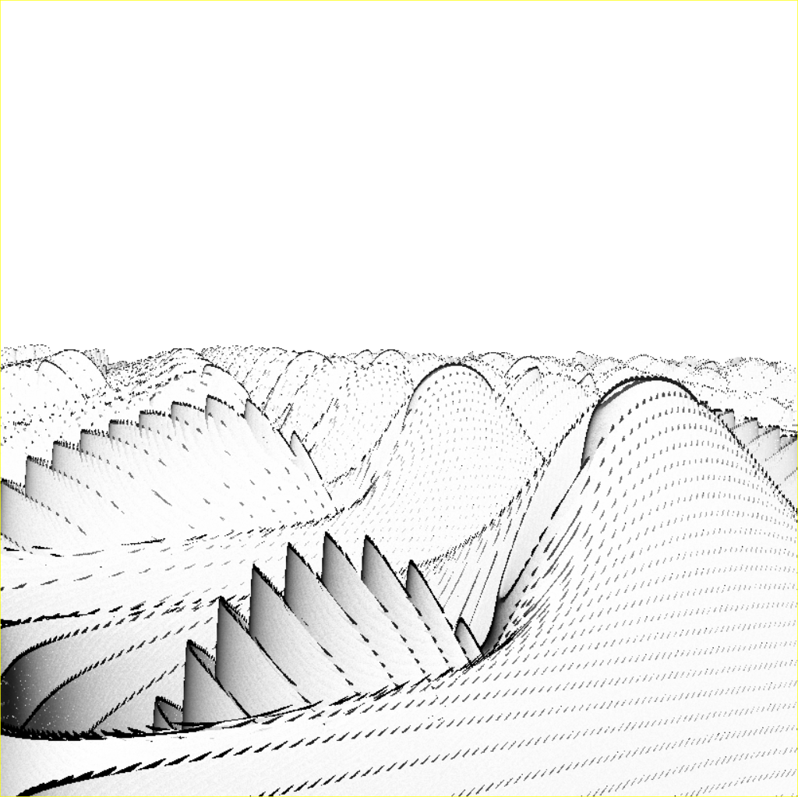
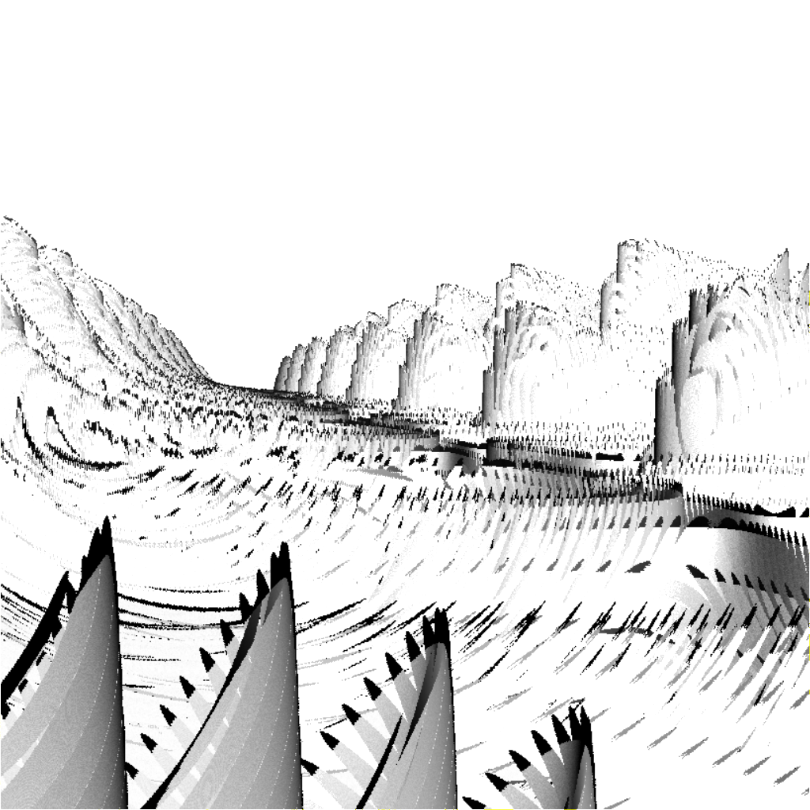
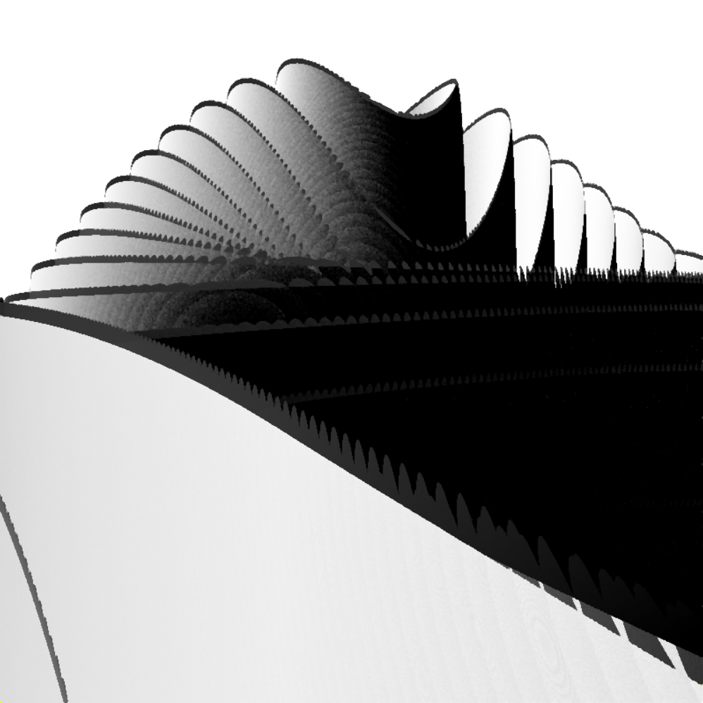
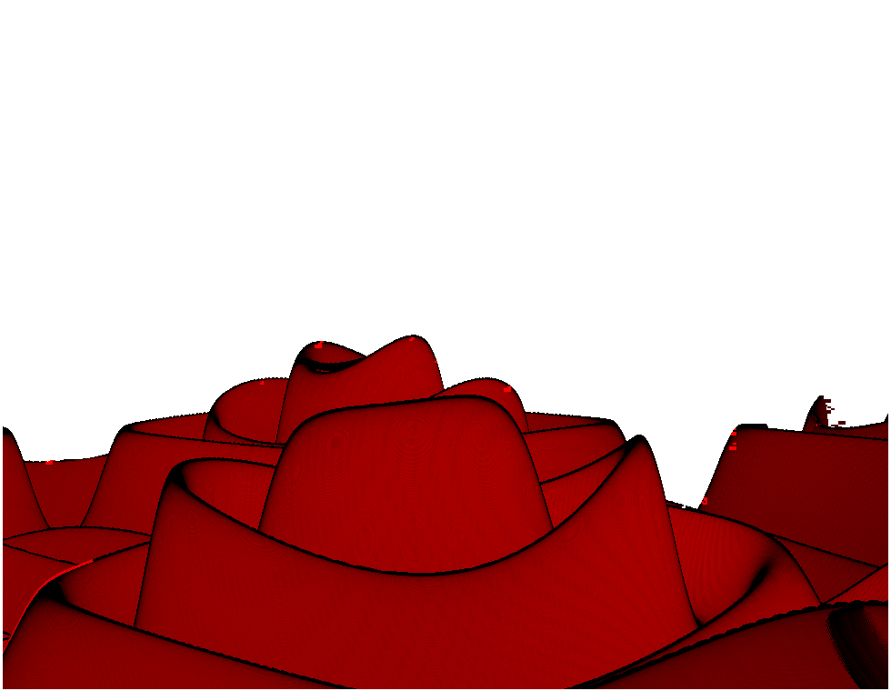
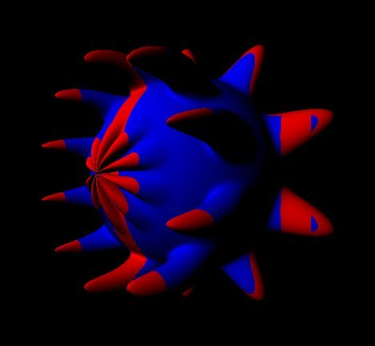
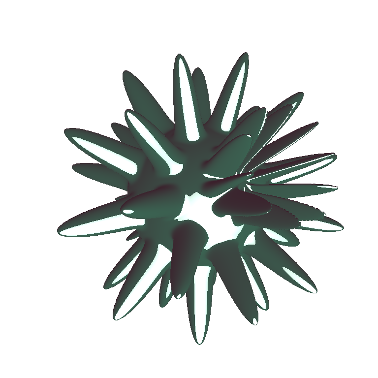
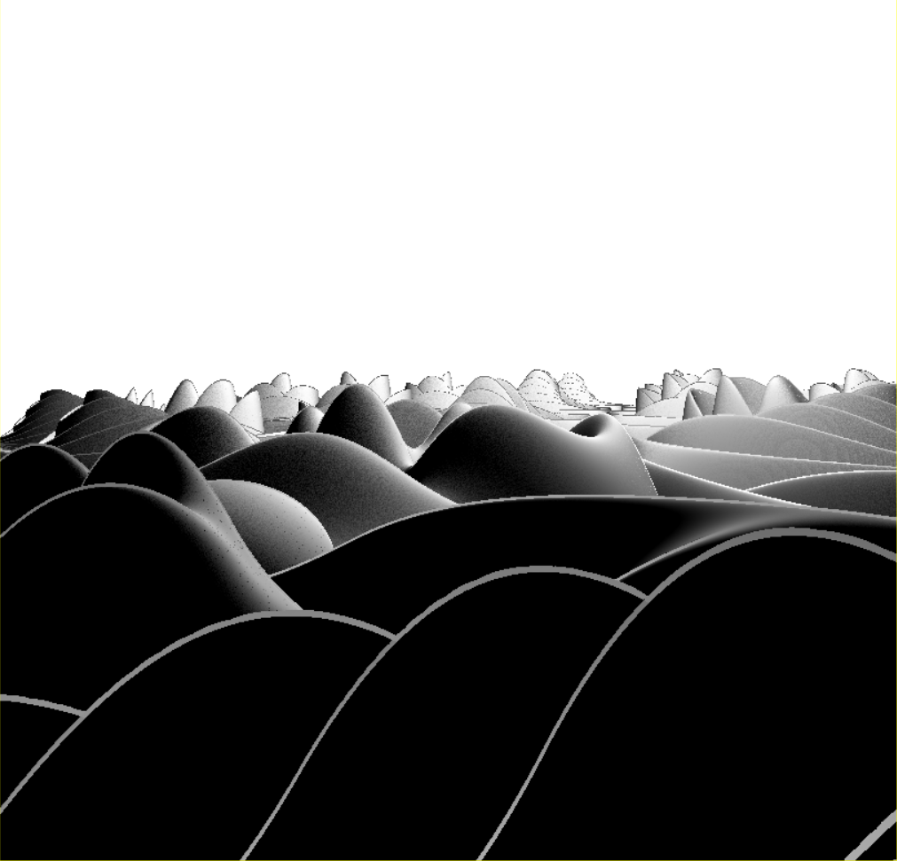
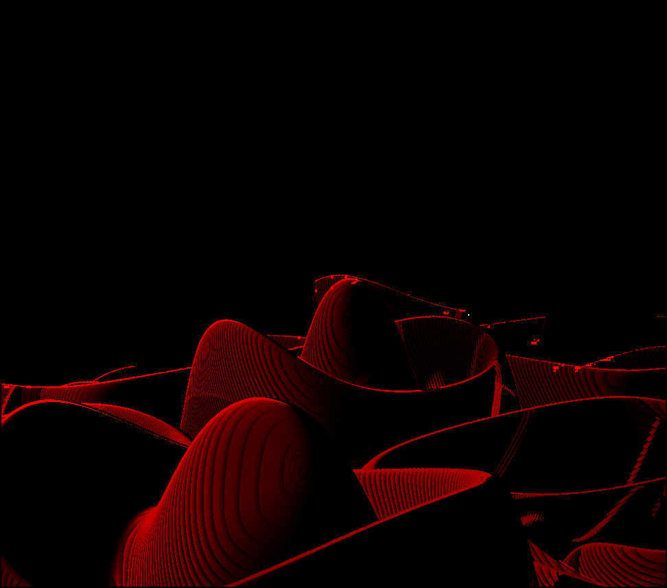

The C Real-Time Raymarcher
 CRTRM - The C Real Time Ray Marcher. A path traced ray marcher that can render mathematical shapes in real time on the CPU. It can render unusual shapes like Voronoi shapes, fractals, and harmonic shapes.
CRTRM - The C Real Time Ray Marcher. A path traced ray marcher that can render mathematical shapes in real time on the CPU. It can render unusual shapes like Voronoi shapes, fractals, and harmonic shapes.
◆
 crtrm is an exploration of worlds that only exist in mathematics. With crtrm, I am able to visualise landscapes and creatures I have never seen before. Every time I start crtrm, it is like a trip to another planet.

When I started this project, I thought that it would be difficult to find new and interesting forms to view. I expected that the common formulas would result in dull pictures, and that it would take me weeks or months to create something more interesting. Instead, almost everything turned out to be interesting or beautiful, and often both. Simple formulas produced complex, lifelike forms.


Harmonic hills



Nanocite


GLSL
Fourier Surfaces
Project History
crtrm started as a simple path tracer in Javascript. Naturally, I spent more and more time optimising it until it became clear that I was never going to get it up to a reasonable speed. The original is still useful, and I still use it for doing high quality renders of interesting shapes. One day, I will get the MandleBulb rendering properly!
So I spent several weeks researching the field of fast path-tracing, prototyping (in Haskell) and rewrote everything in C over a three day, intense coding burst.
The results were still too slow. It was taking around 5 seconds to render one frame. I would need a 200x speedup to be considered real time. And piece by piece, I am working my way towards the goal. crtrm has gained Adaptive Depth Caching, SIMD/SSE support, OS level mult-threading, GLUT and SDL integration, shaders, material shaders, Constructive (and Destructive) Solid Geometry, surface carving, and 3 separate, competing implementations of the rendering core, to get the maximum speed from a processor.
crtrm is slowly gaining some physics engine capabilities. Collision handling is already working, and I'm looking forwards to adding momentum and soft-body deformations.